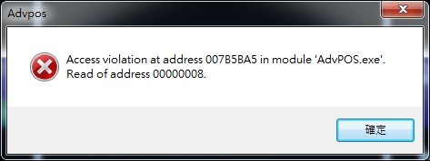

軟體操作顯示錯誤及相關BUG提問及回報
二、同樣偶爾也有發生已全部出餐及結帳，但仍然停留在右邊外帶視窗，此時點選該筆交易，開啟直接結單的小視窗，將結帳改成未結帳後重新再結帳，該筆交易才會在右邊小視窗結束及消失。
三、點選系統，有時會在主螢幕上顯示錯誤，如"物件轉成SQL ComPonent2SQL(TBackground @0258E820):TBACKGROUND"等等訊息視窗，需一一點選"確定"後才能再使用，一旦出現後就會很頻繁，需重開系統。有時在第二螢幕上顯示的錯誤則類似"Access violation at address 00405F24 in module 'AdvPOS.exe Read of address FFFFFFFC"等。
3 個回答
您好
請問您目前採用的windows版本和電腦配備等級是?
您所描述的情況都是讀寫記憶體時發生的
極有可能是硬體問題
建議您換一台電腦主機再測試看看
再請麻煩告知結果
請問您目前採用的windows版本和電腦配備等級是?
您所描述的情況都是讀寫記憶體時發生的
極有可能是硬體問題
建議您換一台電腦主機再測試看看
再請麻煩告知結果
我使用觸控筆電
Acer Aspire V7 582PG
系統為Windows 8.1
記憶體有8G
目前手頭上沒有其他電腦，所以暫時無法換機測試。
我再想辨法改善硬體效能或更新驅動看看!
Acer Aspire V7 582PG
系統為Windows 8.1
記憶體有8G
目前手頭上沒有其他電腦，所以暫時無法換機測試。
我再想辨法改善硬體效能或更新驅動看看!
小弟今天也遇到Access Violation，restarted POS S/W, and then works again.

PC Configuration:
1. OS: Win 7 32 bits
2. 4G RAM
3. CPU: i3
4. Seagate 7200 rpm 500G HDD